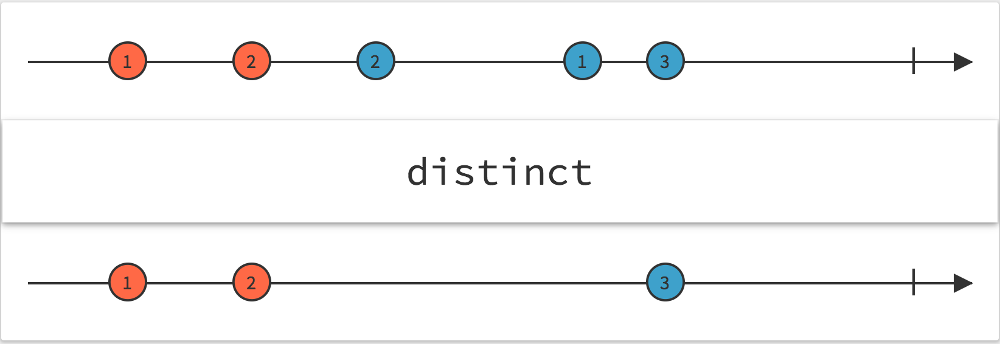

distinct
参数列表：
-
keySelector
function
(可选)一个函数，返回一个值，operator会用这个值进行相等的检测
-
flushes
observable
(可选)一个Observable,他发出一个value,就会让distinct清空内部的缓存hash(使得下一个source.value一定不重复)
返回值: Observabledistinct.png
珠宝图:

功能说明:
- distinct 使用set来缓存source曾经emit过的value,当新的value来的时候，会检查是不是在set里，在的话不会发出
- 如果要比对的不是value本身，可以使用keySelector来返回要比对的数据
备注事项:
- distinct 内部会缓存value,所以存在性能风险，可以考虑定期使用flushes来清空缓存
- 尽量不要用distinct来处理无限大的数据集合，内存问题很大
点击不同按钮查看不同demo 代码效果